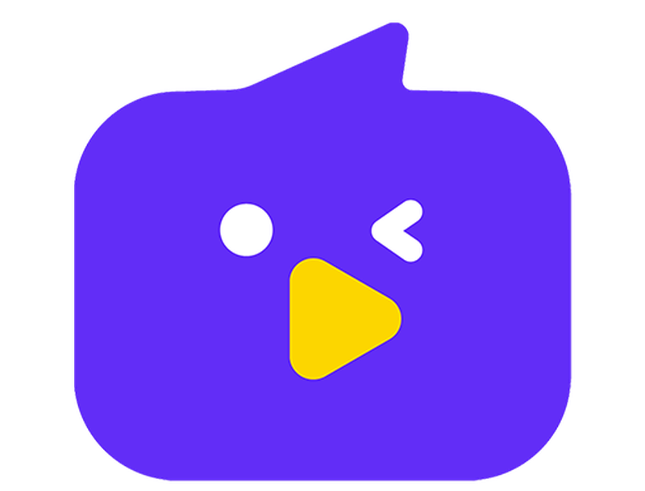
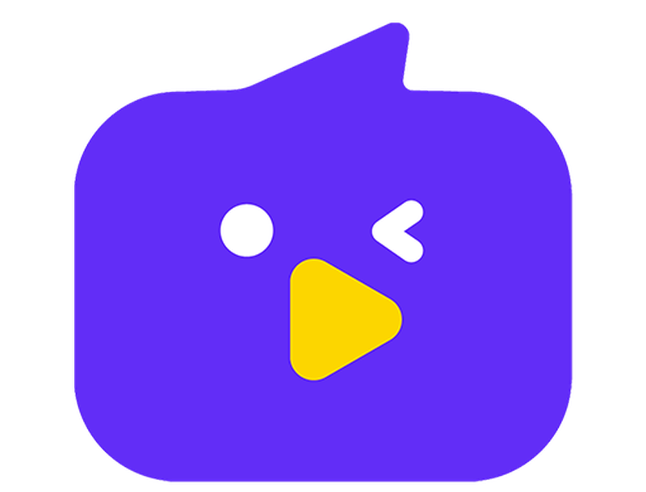

Projeto
Aleatoriamente
De forma bem humorada Gabriel reage a diversos tipos de conteúdo enquanto compartilha histórias de sua vida.
Ver maisNascido no Grajaú, São Paulo, Gabriel Lopes, mais conhecido como Gamer Aleatório, atua como youtuber, streamer e assistente de marketing. Criando conteúdos digitais a mais de 8 anos, Gabriel possui mais de 2 milhões de assinantes somados no Youtube. Sua maior motivação para crescer é levar alegria e risada aos seus fãs. Após ficar muito conhecido por seu canal sobre campeonatos de League of Legends e compilações de lives do brasil e do mundo que hoje conta com mais de 1milhão de assinantes, Gabriel hoje foca em seu canal pessoal onde aborda diversos temas de forma descontraída e compartilha histórias de sua vida.
De forma bem humorada Gabriel reage a diversos tipos de conteúdo enquanto compartilha histórias de sua vida.
Ver maisEm suas transmissões ao vivo, Gabriel diverte seus fãs enquanto assiste conteúdos diversos e aborta temas inusitados e criativos.
Ver maisNeste canal Gabriel compartilha sua filosofia de vida e responde dúvidas de seus fãs.
Ver mais 
